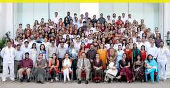
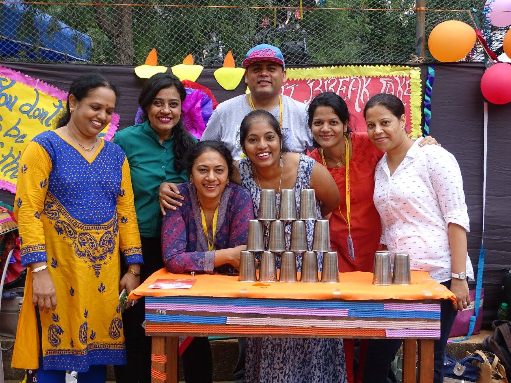
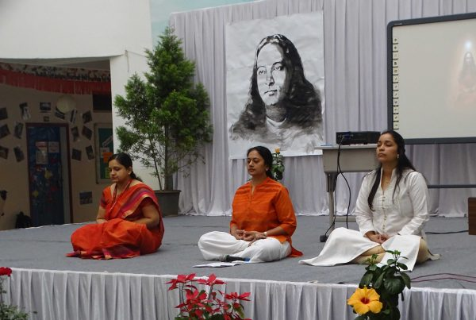
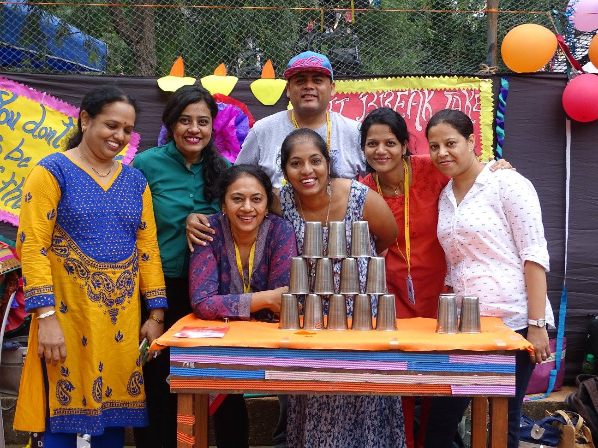
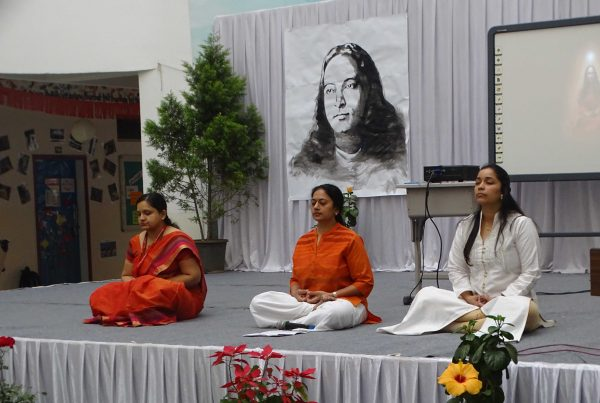

Achievements
We are proud today, the 8 Nov 16, to announce that four (4) of our champion kids from Victorious Kidss Educares, attempted to hit the Guinness World of Records, by participating in a twenty four (24) hour non-stop Skating Marathon. This event was organised by Shivganga Roller Skating Club, which witnessed the participation of 600 skaters from all over India, on Saturday the 5 of November 2016. The Record attempt was a brilliant success.
Victorious Kidss Educares, being an IB World school believes in creating ‘lifelong learners’. Our educational programs concurrently nurture the holistic development of a child, meaning an ambience of all-round development. They learn Sanskrit, German, French, Japanese, Spanish, Robotics, Abacus, Vedic Math’s, ICT C++, Photoshop, Corel Draw, Western Salsa to Hip Hop, Contemporary to Indian Classical, Bharatnatyam, Kathak, Bollywood Dances, specialized sports language. Abacus and Vedic Math are two such courses that are a part of our curriculum to strengthen the variety of data input, towards stroking of intellectual curiosity of every child. Because for us, “Every Child Can & Every Child Matters”. The stimulating curriculum integrates Vedic Wisdom which develops a strong sense of respect and courage in one’s own self. Abacus concept is very friendly and very popular with children of our school. It is one of the most ancient tools used for quick calculations that simultaneously help to boost a child’s confidence and concentration. Vedic Math is a system of reasoning and mathematical analytics, based on ancient Indian teachings called Veda. VKE believes in reviving the goodness of our ancient teachings and Vedantic methodologies. Students of Victorious Kidss Educares participated in the National Level Championship of Aura Vedic Math and Abacus held on January 27th, 2019. Approximately 156 of our champions took part in different programs/levels of Abacus and Vedic Math, along with many other International School and many more scholars from Symbiosis International, Bishops Co-ed, Vikhe Patil, City International, etc.
211 students of Victorious Kidss Educares (VKE) participated in the International Schools Sports Association (ISSA) held at MIT Vishwashanti Gurukul, Pune. This was conducted on the 19th, 20th and 21st of January 2017, we had 125 students from MYP and 86 from PYP, both girls and boys who participated in the competition. Our champions competed against players from Indus School, Global Indian International School, St. Peter’s School from Panchgani, DY Patil School, BK Birla School and MIT Gurukul. Our students bagged a chunk of 134 Medals.
Alumni
 


